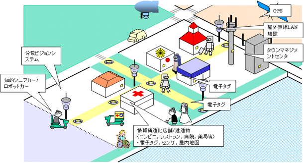
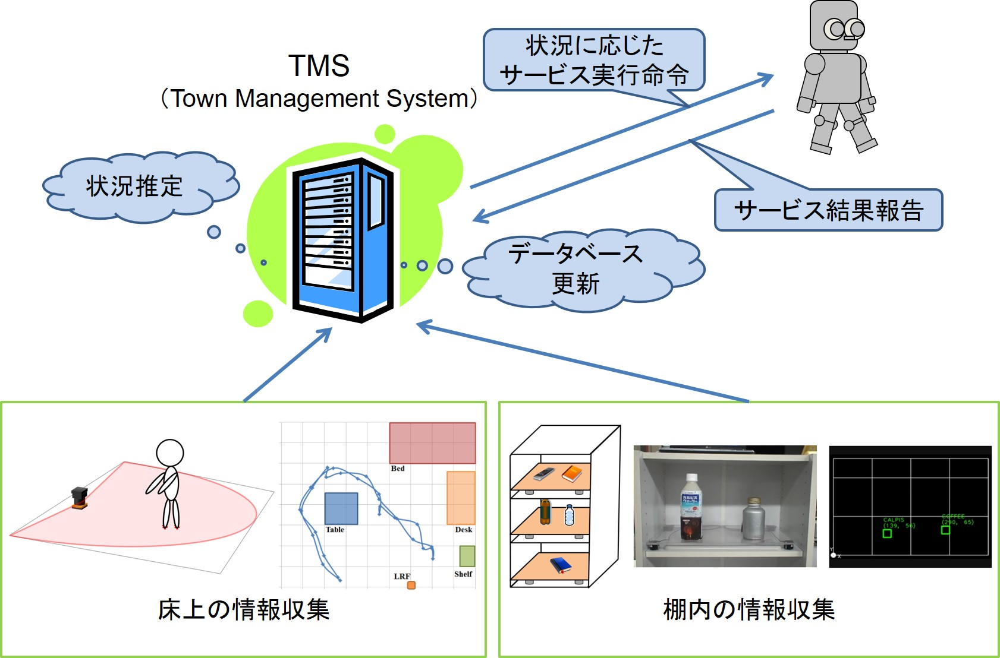
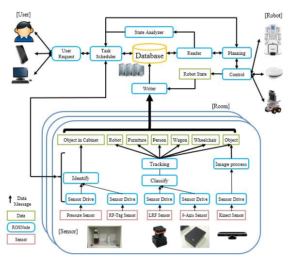
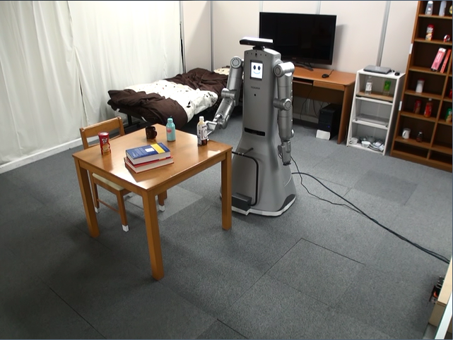
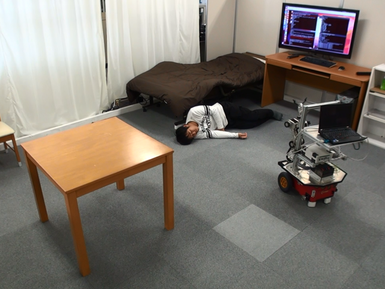
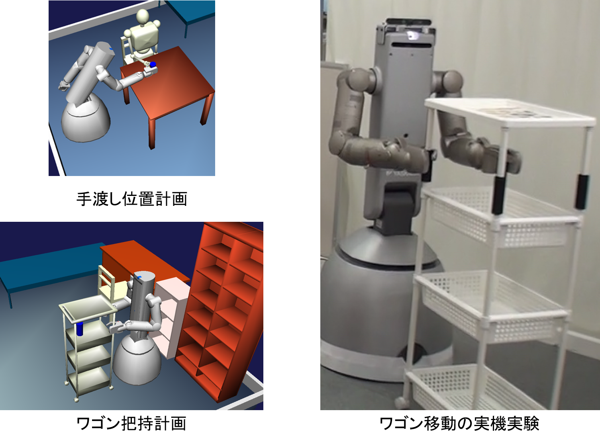
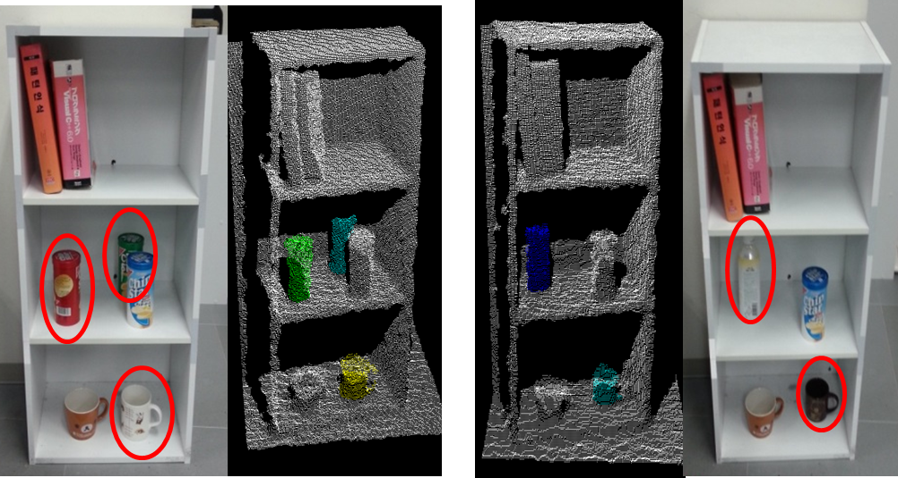
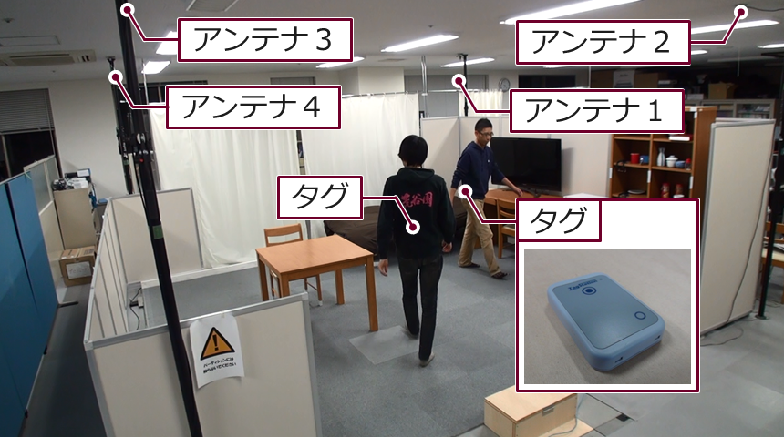

環境情報構造化
日常生活環境でロボットが人間と共生して働くためには，ロボットに搭載された機能だけで複雑な周囲状況を認識するのではなく， 環境側にセンサネットワークや様々な情報を格納したマーカを配置して，ロボットの作業を支援する仕組みの構築が不可欠です．そこで，この仕組みを実現する環境情報構造化プラットフォームの研究開発を行っています．
タウンマネジメントシステム（TMS）
情報構造化環境では，人やロボット，日用品の位置情報などを取得できます．さらに，ロボットが状況に対応して自動的にサービスを実行するためには，収集した情報を解釈し，適切なサービスを選択・実行する必要があります．また，大規模化するシステムに対応するため，センサや処理アルゴリズムをネットワーク化し，目的ごとに構成を組み替えられるものである必要もあります．これらの要件を満たしたTMSアーキテクチャを設計・開発し，実世界で生活支援サービスを提供するための研究を行っています．
環境情報構造化に基づくサービスロボット実現のためのセンサ情報ネットワークの開発
環境側に分散配置された様々なセンサや処理アルゴリズムをネットワーク化し，目的ごとに構成を組み変えて必要な情報を取得，処理するとともに，結果をクラウド型データベースに格納します．その環境情報をサービスロボットに提供するシステムを開発しています．
情報構造化アーキテクチャの構築
ロボットの動作を支援するための環境である情報構造化環境では，環境にセンサを配置することで，人，ロボット，日用品の位置情報，環境地図などを取得することができます． さらに，ロボットが適切な生活支援サービスを実行するためには，集めた情報を統合・解釈し，環境内の状況を推定する必要があります． このように，情報構造化アーキテクチャの要件を明らかにし，実世界で生活支援サービスを提供する仕組みを構築するために研究を行っています．
| 日用品の物品管理サービス | 倒れた人の検出･警告サービス |
|---|---|
|  |
 |
生活支援ロボットの行動動作計画
情報構造化された環境において，ワゴンを押して物品運搬を行うための動作計画を行っています．人に物品を手渡す位置や，ワゴンを押して移動するための経路の計画を行い，実機で検証します．
日用品の位置追跡
どこに何が入っているのかがわかる知的収納庫を開発しています．複数のセンサを埋め込むことで家具・収納庫を知能化します．
ロボット搭載カメラを用いた家具上変化検出
ロボットに搭載されたカメラを用いてテーブル上や棚内などの変化を前時刻の情景と比較して検出し、無くなったあるいは新たに置かれた物品を検出する研究を行っています。
| 本棚内の変化検出 |
|---|
|  |
生活支援ロボットの行動動作計画
床上に設置したレーザ距離センサを用いて人の足を検出し，歩行軌跡の計測や生活行動の推定を行っています．さらに，これらの情報と，生活者にアクティブRFIDタグ（自ら電波を送信するタグ）を身に付けてもらうことで得られる情報を用いて，複数人物を同時に追跡する研究も行っています．
